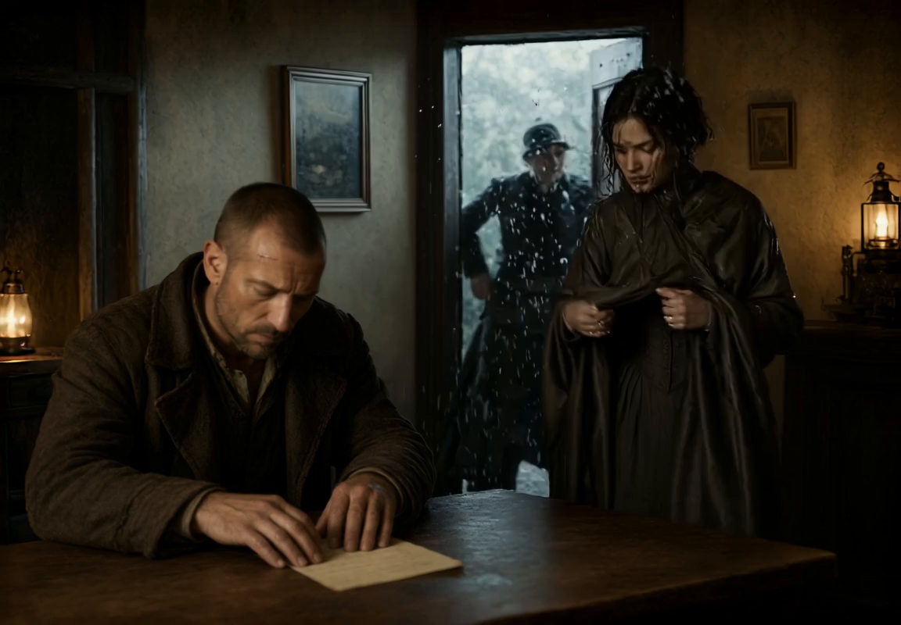
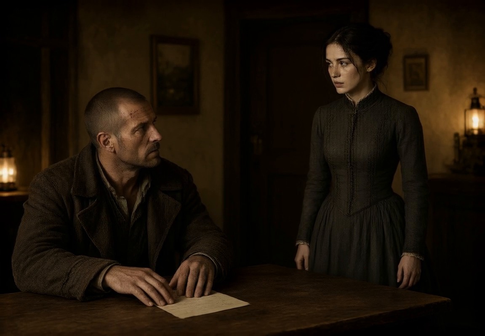
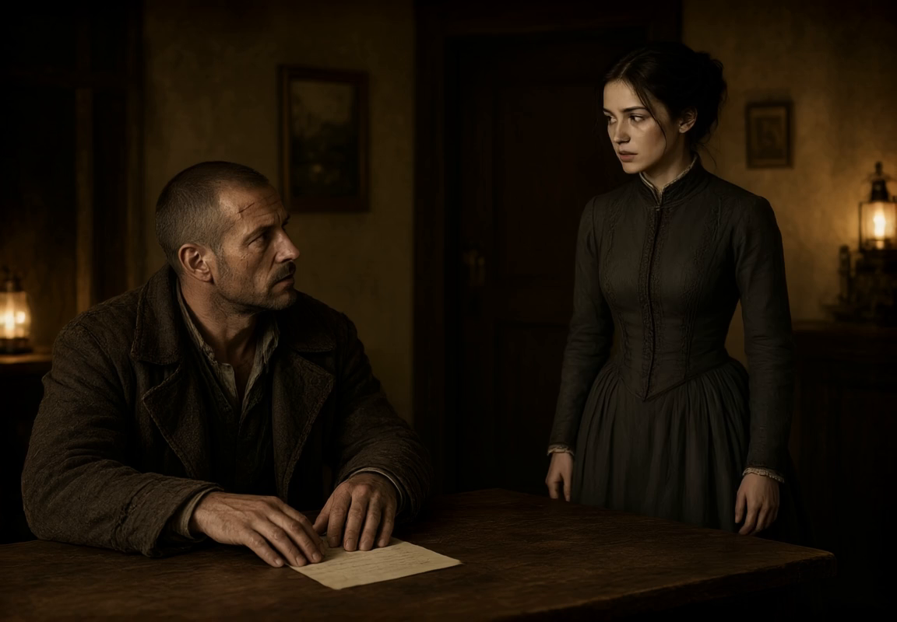
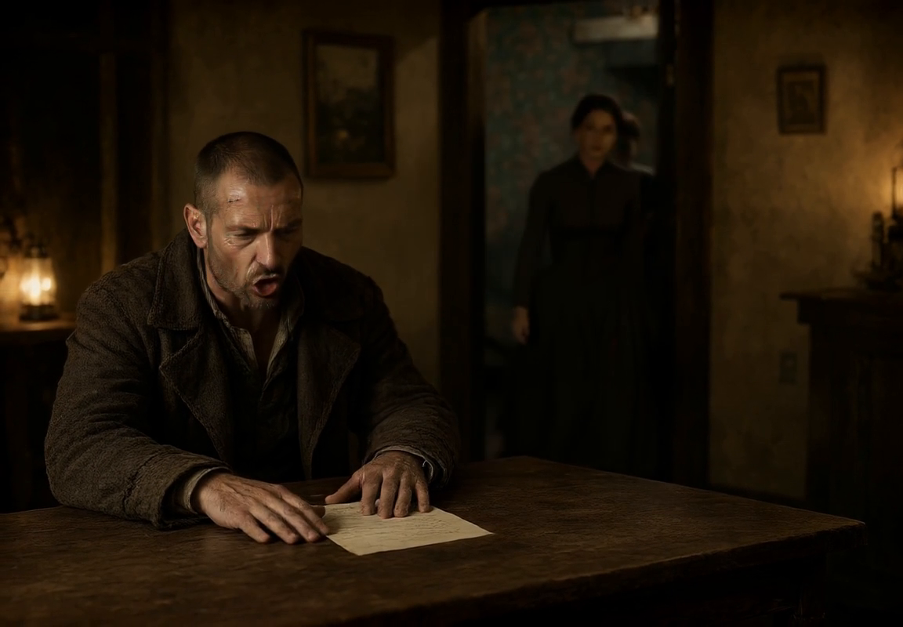
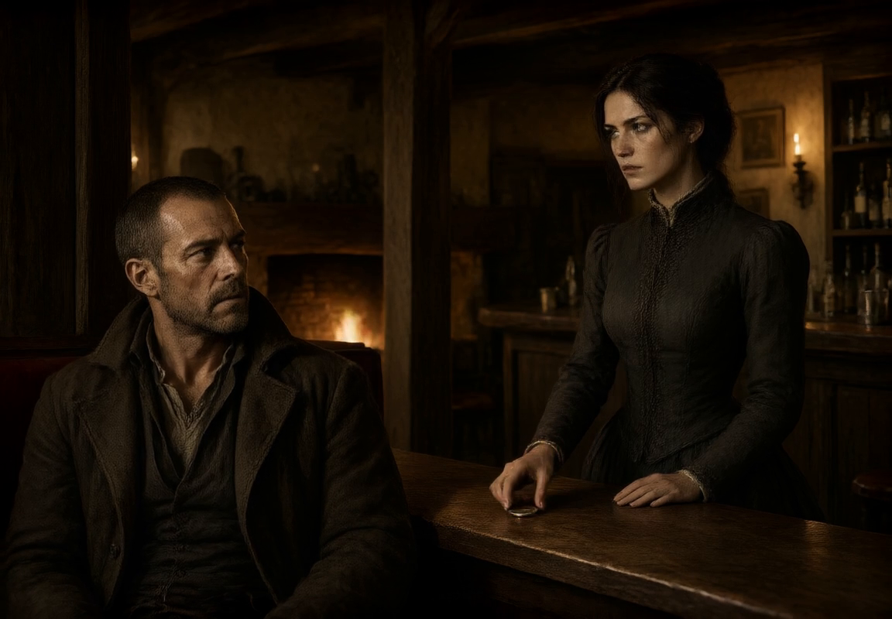

Prompts written by the Text Model (Gemma 4 12B heretic), 5 s each, made through the app. Pictures: Frame 1, Frame 2 (Into Next ends on it).
Contact sheet: each clip at frames 0, 40, 80 and 120.
Lands on the picture. The video model added a second figure outside the door.


The camera remains fixed in a medium shot as the door in the background swings shut and the woman in the high-collared dress shakes her wet hair and cloak, sending tiny droplets of water into the air. The man in the heavy overcoat sits at the table, his hand pressing down firmly on the paper beneath it as his facial muscles tense and his jaw tightens. He slowly lifts his head to look at her, his expression shifting into a guarded, wary gaze as the lantern light flickers slightly. Sound: the heavy thud of a wooden door closing, the muffled patter of rain outside, and the faint creak of the tavern chair.
Goes wrong: she walks back out of the door. The prompt retold the Frame's own action, which comes before the picture.


The woman in the traveling dress steps forward, her hands moving to the heavy door behind her to push it shut, while the fabric of her cloak shakes slightly as if wet. She looks toward the man and speaks in a clear voice, "Is the kitchen still open, or only the bar?" The man at the table keeps his head down toward his drink, his face remaining tense, but his mouth twitches into a slight grimace. He speaks in a low, gravelly voice, "Depends on if you want something real to eat. Bar stays open. Kitchen... depends on your luck with the cook." Sound: The heavy thud of a wooden door closing, followed by the muffled voices of the man and woman.
Small movement, back to the picture: loops.
The man in the heavy coat remains still, but his eyes blink slowly as he keeps his gaze fixed on the woman. A slight twitch occurs at the corner of his mouth, and his hand tenses slightly over the paper on the table. The woman standing before him breathes softly, her chest rising and falling subtly in the golden light. The distant flicker of a lantern casts a faint, steady glimmer on the scarred wood of the table. Sound: the low, crackling crackle of a nearby hearth and the muffled, distant drone of wind.
Heads for the door, then cuts to Frame 2: its picture is another room, so there's no move between them.

The woman in the traveling dress turns and walks toward the bar in the background, while the man at the table remains seated, his eyes narrowing as he watches her move. The woman reaches the bar and places a silver coin onto the scarred wood, the coin glinting under the amber light. The man leans back slightly in his chair as the wood groans softly. Sound: the muffled thud of a coin hitting wood, the faint crackle of a nearby fire, and the distant howl of wind.
Told the Frame has already happened, and given the next Frame's story: she goes on into the room, a coin on the table, and he answers. The camera moves, though asked to stay still. Old and new, frames 0, 40, 80, 120.
The woman in the traveling dress turns and moves toward the bar in the background, her steps firm as she places a small, silver coin onto the scarred wood. The man in the heavy overcoat remains seated, his eyes narrowing as he watches the coin glint under the lantern light. He leans back slightly in his chair, which lets out a low groan of wood on wood. He keeps his head low in the shadows as he speaks in a gruff, cautious tone, "Rooms aren't cheap tonight. Storm's blowing the prices up across the whole coast. You lucky if any have beds left." Sound: The low groan of the chair, the muffled crackle of a nearby fire, and the man's gravelly voice.
The original Into Next cuts at 3.75 s (biggest frame-to-frame scene score 0.173). Both of these are continuous (0.011 and 0.008). Original, A and B at frames 0, 30, 60, 90, 120.
The woman in the traveling dress subtly nods and begins to move toward the right of the frame as the background shifts from a small table to a larger bar area. The man in the overcoat remains seated but his posture shifts; he leans back slightly into his chair, his face tightening as his eyes narrow. As the woman reaches the bar counter, she places a coin on the surface. The lighting shifts to a warmer, flickering glow from a nearby hearth. Sound: The muffled thud of a door closing, the faint rustle of fabric, and the heavy crackle of a nearby fire.
The camera pulls back and pans right, following the movement of the woman in the high-collared dress as she turns away from the man and walks toward the bar. The man remains seated at the table, his body tensing as his eyes follow her. As she reaches the bar, she places a coin on the scarred wood, its metallic surface glinting in the firelight. The man leans back slightly in his chair, his expression becoming even more guarded as he watches her. Sound: The distant roar of wind and rain against the walls, the heavy thud of a coin on wood, and the creak of a wooden chair.
Cuts at 2.1 s (0.142): she steps in Frame 1's room, then Frame 2's. C and hand-written, frames 0, 30, 60, 90, 120.
A locked-off camera captures the scene in the dim tavern. The woman in the high-collared dress shifts her weight and takes a single step forward toward the bar, while the man in the worn overcoat remains seated, his facial muscles tightening as his mouth twitches into a subtle grimace. The woman reaches out and places a small, glinting coin onto the wooden surface. The man leans back slightly in his chair, his eyes narrowing as he watches the coin. Sound: The faint crackle of a nearby fire, the muffled thud of a coin hitting wood, and the heavy atmosphere of the tavern.
Cuts too, at 1.9 s (0.135): the limit is the two pictures, not the prompt.
One continuous take with a locked-off camera. The young woman in the dark dress takes one slow step forward to the wooden counter in front of her and places a small silver coin on it, her eyes on the man behind the counter. The man stays where he is, leans back slightly and narrows his eyes at the coin. The lantern light flickers. Sound: rain against the walls, the soft click of the coin on wood, the creak of a chair; no voices.
5 s cuts at 3.75 s (0.152); 8 s is continuous (0.007), the room morphing, but Kael turns away, drops out of view and comes back. Both, at their quarters.
A locked-off camera captures the man and the woman as the environment shifts. The woman moves forward, her body subtly shifting as she crosses from the center toward the background, while the table in front of the man transforms into a long, scarred wooden bar and a flickering hearth appears in the corner. The man leans back slightly in his chair, his facial muscles relaxing into a grimace, while the woman reaches out and places a silver coin on the wooden surface. The lighting shifts from the soft glow of lanterns to the flickering, warm amber light of the newly appeared hearth. Sound: the low crackle of a fire, the muffled thud of a heavy coin hitting wood, and the distant howl of wind.
The Chain changes each Image Prompt only as far as the Action asks, so its pictures are the same room (Frame 1, Frame 2). No cut (biggest jump 0.015): she shuts the door, crosses to the bar and puts the coin down. Midway the camera swings with her and Kael is out of frame a moment. Frames 0, 30, 60, 90, 120.
The traveler pushes the heavy wooden door closed with a firm shove, and as it settles into its frame, she shakes the heavy fabric of her sodden cloak to cast off the rain. She then turns and takes a few steady steps forward, crossing the space toward the bar. She reaches out and places a single, small silver coin onto the weathered wood of the counter in front of Kael. The flickering oil lamps continue to cast a steady, warm glow across the scene. Sound: The heavy thud of the door closing, the wet rustle of the cloak, and the dull clink of the silver coin hitting the wood.